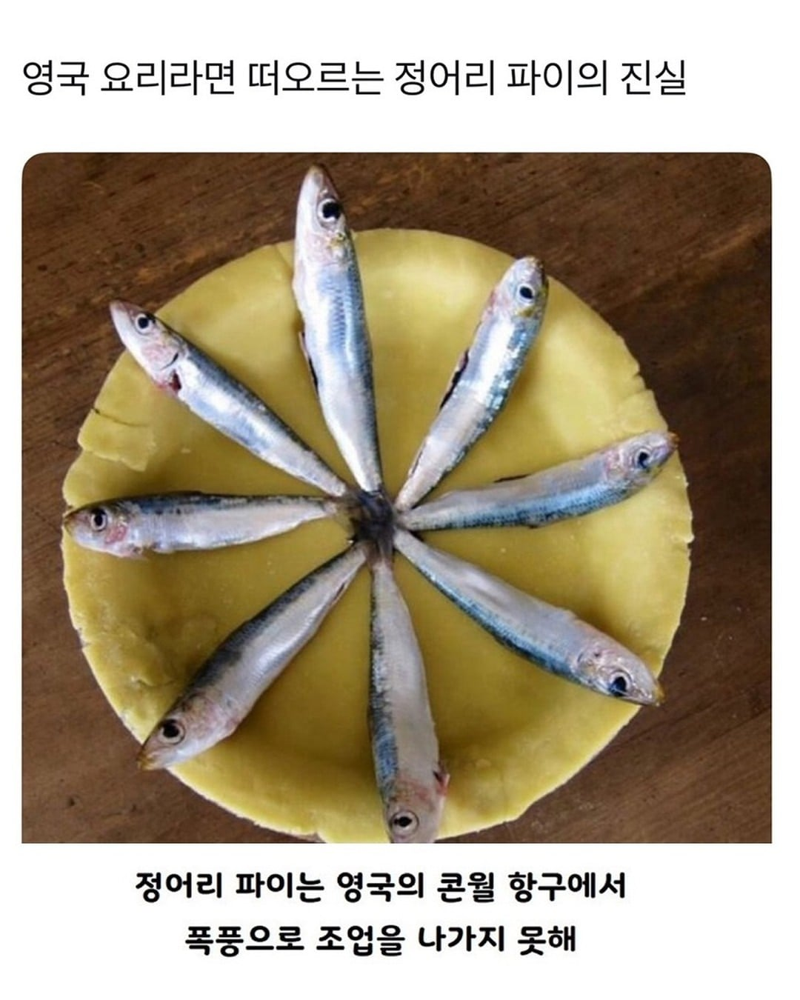
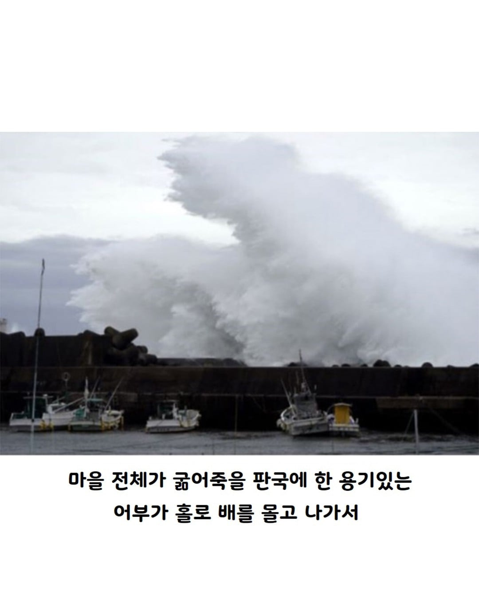
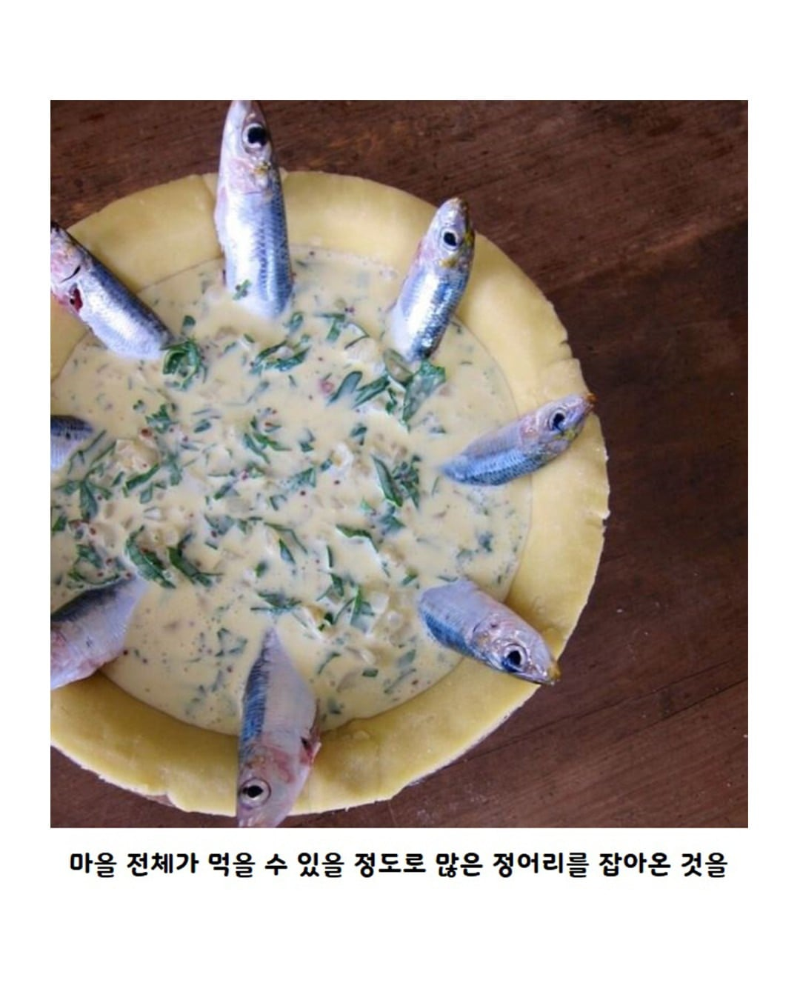
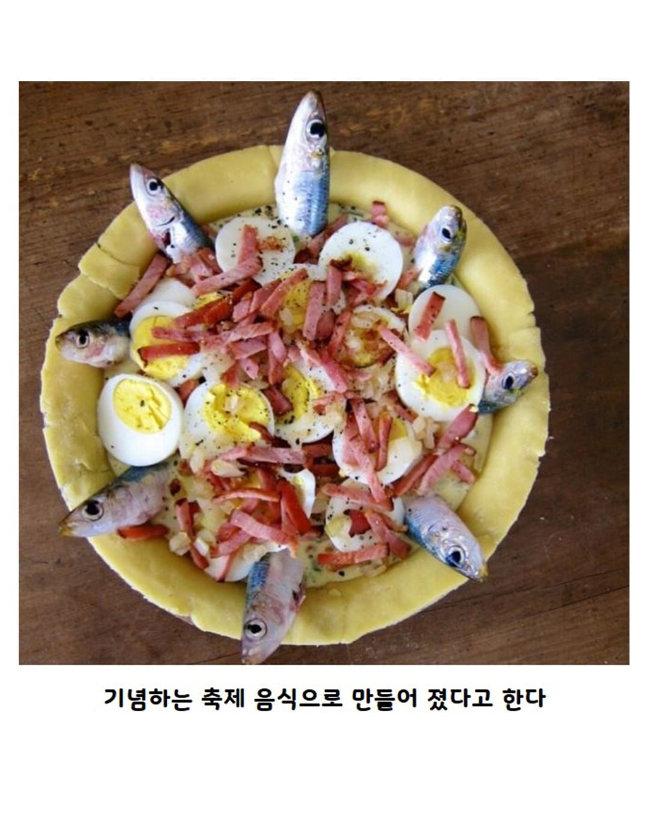
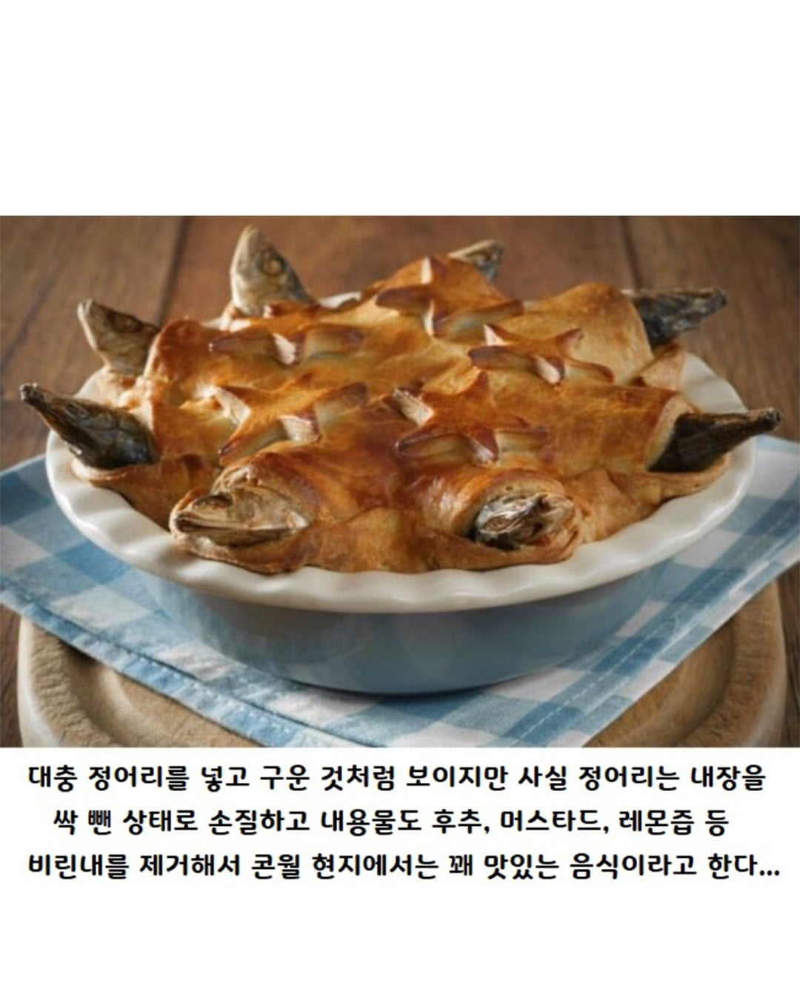

내장은 싹 빼면서 대가리는 왜 남겨놓았냐..
예로부터 east asia에서는 fish head라고 하였거늘
마! 어두육미 모르나!
가을 정어리 머리는 깨가 12갤런이라는 말 이지
1Feet 정어리 헤드 깨 12갤런 3파운드 2온스
장식이래
저건 맛보다는 비주얼 때문에 까이는게 크지 않나
밥을 모르는건 저주네
아니 알겠으니까 대가리를 좀
머나먼 동양에서 어묵을 만들 때
정어리 파이나 만드는 분들은 대체
16~7세기 까지 서양은 동양에 게임이 안되는 발전이었다고 생각함...
영국음식은 저게 문제가 아니라 음식을 자꾸 젤리랑 섞는게 문제임
장어젤리는 ㄹㅇㅋㅋㅋ
뼈 제거 해서 주면 먹을듯
이거 어느 유튜번가 먹었는데 생각보다 맛있다고 한거 본거 같은데
그래도 비주얼부터 힘드네 ㅋㅋ
가만 생각해보니까 비주얼은 좀 그래도 맛은 ㄱㅊ을 조합이긴해
생선은 회와 구이가 최고인 것 같아
셰퍼드 파이같은 세이버리 파이, 고기파이류도 그거만의 맛이 있는데 궁금하긴 함
잘익힌 생선의 담백함과 짭짤함 그리고 레몬 화이트 소스오 상큼한데 그걸 익힌 밀가루 반죽과 먹는다 상상이 잘안가네 요리사는 못하겟군
생선 샌드위치 같은 느낌 아닐까
대가리만 좀 떼서 요리하면 안될까
레비디커스 콘월
알았으니까 대가리는 좀 떼라고
우리나라는 꽁치 깁밥이 있다
너건 그래도 볼만하지 한국에 정어리 젓갈 먹어볼텨
키쉬 같은거라고 생각하면 되나?
이거보니 생선 안먹은지 2년이 넘었군.귀찮더라도 먹어야할거 같은데
콘월쪽이 원래 맛난거 많이 만들긴함
어두육미는 동서양 공통ㅋㅋ
비슷한 감성으로 경남 남해 지역의 멸치 음식들을 추천한다 ㅋㅋ 멸치 쌈밥
이름이 스타게이저였나 그랬던듯. 파이에도 별모양 장식있네 ㅋㅋ
정어리가 뭔지 누가 좀 알려줘라
청어도 그렇고 존나게들 쳐먹네
저렇게 보니 꽤 맛있어보임
생각보단 맛있음 엔쵸비 파스타 느낌 정도